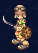
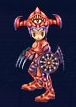
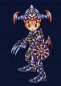
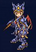
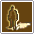
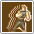
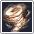
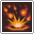
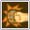
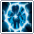

The Clock
Naviondark
- 受付NPC
- Librarian Parks
- 場所
- Museidon Library Archive
- 参加条件
- Lv96〜135 / 4〜8人
ROGUE / 近接物理 / 回避・機動力
素早い攻撃と高い回避、移動力を活かす近接系統。毒などの継続ダメージを重ねたり、敵の行動を妨げたりできます。
CLASS OVERVIEW
高い回避と移動力を活かし、近接攻撃・毒や出血・スタン・Blindなどを組み合わせて戦う系統です。上位になると複数の範囲攻撃や自己強化も増え、AoE狩りの選択肢が広がります。
STATUS GUIDE
公式職業紹介ではAGIを中心に育て、装備条件として必要なPOWも確認する方向が示されています。プレイヤー向けの育成例でも、まずAGIを優先し、必要な回避を確保してからPOWを追加する方針を基本とします。
公式：Rogue紹介 ↗ 公式Lexicon：Status Point ↗COMMUNITY BUILD
以下はプレイヤー向けの推奨育成方針であり、固定のAGI・Dodge値を指定するものではありません。
まずAGIを優先して回避を伸ばします。狩場で安定して範囲狩りができる程度の回避を確保することを目安にします。
必要な回避を確保できたらPOWを追加し、攻撃力と最大重量を伸ばします。装備・ペット・狩場によって必要なAGIは変わります。
LEVEL GUIDE
Enhance、Blindside、Accuracy、Rapid Stepなど、回避・機動力・近接戦闘の基礎となるスキルを習得します。
Circle TrapやSandstormが加わり、範囲攻撃と妨害を組み合わせた戦い方が広がります。
Dust Blade、Breeze Dagger、Light Masque、Starlight Shotなどが加わり、状態異常・範囲攻撃・集敵の選択肢が増えます。
Double Strike、Shock Troops、Vacuum Pulse、Shadow Furyなどを習得し、自己強化と高火力スキルを組み合わせられます。
この区分はページに掲載されている転職Lvとスキル習得条件をもとに整理しています。
AOE TIPS
コミュニティ投稿では、防御やDodgeだけで足りない場面を移動・タイミング・スキルの使い分けで補う方法が紹介されています。
曲がり角などで敵との接触が予想されるとき、Blindを利用して被弾を抑える使い方。
複数の敵をスタンさせ、集敵中やAoE前の安全時間を作る使い方。
投稿者はスタンによって短い安全時間を作り、一斉に攻撃される状況を避ける用途を挙げています。
集敵に利用し、敵と敵の間でAoEスキルを使いながら素早くまとめることで被弾回数を減らす運用例。






画像出典：公式職業紹介。各段階の2種類の外見を掲載しています。
場所名はゲーム内で探しやすい英語表記です。
公式Lexiconの早見表に載っている全項目を収録。効果は日本語の要約です。
右欄は「スキルLv：必要キャラクターLv」。公式表の空欄は省略しています。MP・持続時間・再使用時間は全件が公開されていないため、記載のある情報のみを要約しています。ゲーム内の最新表示を優先してください。
| スキル | 効果・消費アイテム | 各スキルLvの習得条件 |
|---|---|---|
Threaten | 敵1体への近接攻撃。 | Lv1: 16 / Lv2: 36 / Lv3: 56 / Lv4: 76 |
Enhance | 自身の通常攻撃速度と回避を強化。スキルレベルで効果が増加。 | Lv1: 16 / Lv2: 36 / Lv3: 56 / Lv4: 76 / Lv5: 96 / Lv6: 116 |
Blindside | 近接攻撃とスタン。公式記載はスタン4秒、再使用17秒。 | Lv1: 21 / Lv2: 46 / Lv3: 71 / Lv4: 96 / Lv5: 121 / Lv6: 146 |
 Accuracy | 自身と周囲の対象のクリティカル・スキルクリティカルを強化。 | Lv1: 26 / Lv2: 56 / Lv3: 86 / Lv4: 116 / Lv5: 146 |
Rapid Step | 自身の移動速度を強化。 | Lv1: 31 / Lv2: 56 / Lv3: 81 / Lv4: 106 / Lv5: 131 |
 Invisible | 一定時間、姿を隠す。Transparent Plantを1個消費。 | Lv1: 36 / Lv2: 61 |
Poison Blow | 近接攻撃と毒の継続ダメージ。同じ毒効果は上書きされる。 | Lv1: 41 / Lv2: 61 / Lv3: 81 / Lv4: 101 / Lv5: 121 / Lv6: 141 |
Extract | 指定した近くの地点へ瞬間移動。段差なども越えられる。 | Lv1: 51 / Lv2: 66 |
Evil Voice | 敵を眠らせる。攻撃で解除。Sleeping Herbを1個消費。 | Lv1: 61 / Lv2: 81 / Lv3: 101 / Lv4: 121 |
Circle Trap | 自身の周囲へ範囲攻撃。 | Lv1: 66 / Lv2: 91 / Lv3: 116 |
Cruel Blow | 近接攻撃。対象の通常攻撃・スキル速度を50%低下させる（公式説明ではボスも対象）。 | Lv1: 71 / Lv2: 96 / Lv3: 121 / Lv4: 146 |
 Sandstorm | 周囲への範囲攻撃とBlind（暗闇）。 | Lv1: 81 / Lv2: 106 / Lv3: 166 |
 Dust Blade | 近接攻撃。確率でスタンを付与。 | Lv1: 96 / Lv2: 116 / Lv3: 136 |
Breeze Dagger | 近接攻撃と出血の継続ダメージ。同じ出血効果は上書きされる。 | Lv1: 106 / Lv2: 121 / Lv3: 136 |
Light Masque | 周囲への範囲攻撃。確率でスタンを付与。 | Lv1: 116 / Lv2: 136 / Lv3: 156 |
Starlight Shot | 追尾する遠距離攻撃。スキルLv1は1発、Lv2は2発。 | Lv1: 126 / Lv2: 146 |
 Double Strike | 自身の与ダメージを15%強化。公式記載は14秒持続、再使用20秒。 | Lv1: 131 |
 Shock Troops | 自身の与ダメージを7%強化。公式記載は12秒持続、再使用28秒。 | Lv1: 136 / Lv2: 176 |
Vacuum Pulse | 自身の周囲へ3連続の範囲攻撃。強い敵対心を発生させる。 | Lv1: 141 / Lv2: 161 / Lv3: 181 |
Shadow Fury | 対象に10連続の近接攻撃。公式記載は再使用10秒。 | Lv1: 146 |
Lv16〜61の初期スキルブックはArcarinas Square（Brynhild）のSkill Book Merchantで購入できます。公式一覧では上位のスキルブックは該当レベル帯のマップでドロップすると案内されています。
公式：Skill Book Locations ↗CLASS CHANGE
各段階の準備から転職完了まで、このページで確認できます。
初めての転職
Lv16になったらArcarinas Square / BrynhilldのReinmothへ。Apply for class changeを選びます。
受注すると希望職業のギルドへ転送されます。転職前にすべての装備を外します。
RaymondのBecome a Rogueを選んで転職します。転職後の職業はNeophyteです。
受け取った初期装備とスキルブックを確認します。
転送先：Rogues Guild / Guild Plaza / 担当：Raymond
3色のDemon Bloodと指定装備
Reinmoth（Arcarinas Square / Brynhilld）またはReilath（Essene）から転職クエストを受けます。
受注した案内NPCに赤・青・黄を各1個納品します。
BrynhildのWeapon MerchantでWhite Dagger、Armor MerchantでArmor of Instinctを各1個購入。材料を所持してAlchemistへ行き、Spirit Orbを作成します。
作成したSpirit Orbを受注した案内NPCへ戻して渡すと、Jureah’s Blessingを受け取ります。
Jureah’s BlessingをRaymondへ。装備をすべて外し、I swearで転職します。保留する場合はLet me thinkを選びます。
Jureah’s Blessingの届け先：Raymond / Rogues Guild / Guild Plaza
公式本文はAlchemistを作成先としていますが、NPC表にはBlacksmithも掲載されています。追加の移動を指示された場合は受注中の案内に従ってください。メイジ担当はBetran / Beltran、町はBrynhild / Brynhilldの表記があります。
英雄名の回答と共通納品
ReinmothまたはReilathから受注し、受け取った手紙を担当ギルドマスターへ届けます。下の訪問順も確認してください。
Name of Legendary Heroの答えはPeyshan。英語表記で回答します。
ギルドマスターの指示と訪問順に沿って進めます。NPCごとの細かな会話や追加条件は、進行中のクエスト表示を確認してください。
Xen Stone ×1・Yellow Watermelon ×5・Caricsobana ×2・50,000 Kronを、クエストで指定された相手へ納品します。
Yes, I swear an oathで転職。保留する場合はI need time to thinkを選びます。装備を外す必要はありません。
公式表のNPC訪問順
ボス素材と3つの試練
ReinmothまたはReilathから受注し、BaronでQuest Part 1を受けます。
下の討伐先を確認し、Rodney Garters・Tiger Dogma・Naviondark・Artpolyを集めます。納品数は受注中のクエストと照合してください。
ギルドマスターへ素材を納品し、Quest Part 2を受注します。
Eaglerentin PlainにあるMemorial Chapelへ入り、Saintに話しかけます。公式本文の道順はEirの東側から6マップ先です。
Saintから案内される火・水・毒の試練を完了します。
試練が終わっても、すぐに町へ戻らないでください。もう一度Saintに話しかけ、ギルドマスターへの案内を受けます。
Baronへ戻り、転職の会話を完了します。装備を着けたままで進められます。
The Clock
Cow Legend
Fiersavier（虎）
Amaranth Wyrm
Amaranth Wyrmのインスタンス：公式Boss Instancesでは週1回、パーティリーダーが4次転職クエストを持っていることが条件です。各ボスの人数・レベル制限も出発前に確認してください。
NaviondarkはThe Clock、ArtpolyはCow Legendです。転職ガイドの色分け・2024年11月の訂正と、アイテムガイドのNaviondark欄を照合しています。2026年1月のコメントには逆の対応があるため、その部分は採用していません。
Rodney Gartersについては、公式ページのプレイヤーコメントにワールドボスのAmaranth Wyrmでも入手できるとの報告があります。この手順では、公式本文に掲載されたインスタンス経由を案内しています。
メイジのLv131：職業紹介の転職場所はMagicans Convene（Essene）、転職ガイドのNPC表はMordineで不一致があります。Mordineへの移動を断定せず、受注時の案内を確認してください。
公式：メイジの転職場所 ↗公式：Naviondarkの入手先 ↗転職手順確認：2026年9月20日。受注中のクエスト条件が異なる場合はゲーム内表示を優先してください。
公式：転職ガイド ↗公式：転職素材の入手先 ↗公式：ボス参加条件 ↗